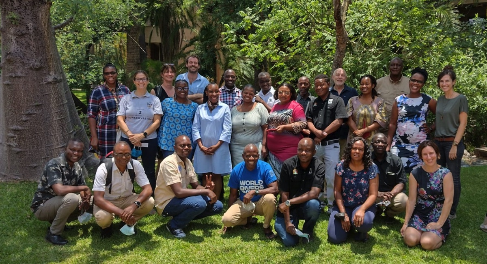

04.1
Introdução ao SIG
Conceitos fundamentais e prática em ArcGIS e QGIS, para iniciantes e não especialistas.
Pilar 04 · SIG e capacitação
A melhor análise é aquela que a sua equipe consegue repetir. Oferecemos treinamentos práticos e oficinas em ArcGIS, QGIS e Google Earth Engine, e orientamos equipes a automatizar seus próprios fluxos de trabalho.

Contexto
Trazemos vários anos de experiência no ensino de disciplinas de SIG aplicado em nível universitário, guiando centenas de estudantes do primeiro mapa à análise espacial independente em ArcGIS e QGIS.
Fora da universidade, nossa equipe capacitou parceiros de conservação e facilitou oficinas com públicos muito diferentes, de oficinas sobre políticas de REDD+ com comunidades locais na Amazônia brasileira a sessões técnicas com equipes de programas. As capacitações estão disponíveis em inglês, espanhol, alemão e português.

O que oferecemos
Capacitação prática em ArcGIS, QGIS e Earth Engine para equipes que querem desenvolver competências espaciais internamente e manter o trabalho em andamento.
Conceitos fundamentais e prática em ArcGIS e QGIS, para iniciantes e não especialistas.
Dados de satélite, classificação da cobertura do solo e detecção de mudanças no Google Earth Engine, com Python ou JavaScript.
Capacitação construída a partir dos seus próprios dados e perguntas, presencial ou remota.
Apoio para transformar tarefas manuais e repetitivas de SIG em scripts documentados e reprodutíveis.
Sessões facilitadas que usam mapas para reunir comunidades, parceiros e tomadores de decisão.
Experiência
Nossa equipe já capacitou estudantes, equipes de conservação e atores locais em SIG e sensoriamento remoto. Isso inclui:
Conte-nos brevemente sobre o seu projeto. Normalmente respondemos em até um dia útil.